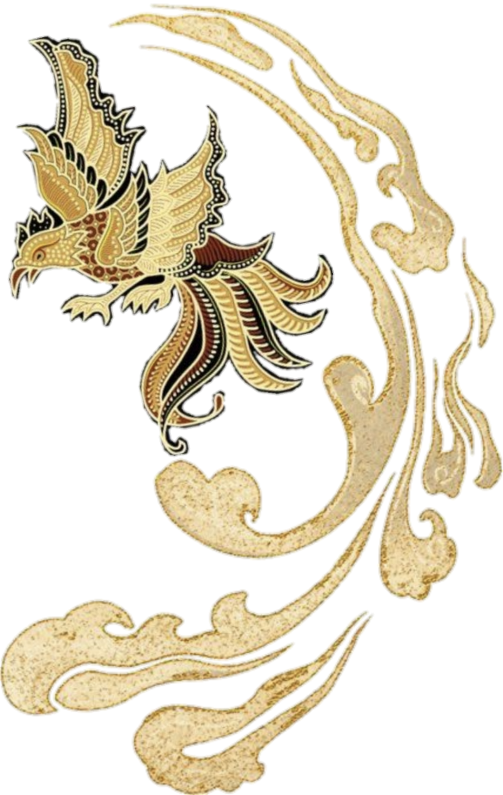

Latar Belakang
Di tengah pesatnya perkembangan zaman, banyak generasi muda mulai mengenal budaya Nusantara hanya melalui buku pelajaran atau media sosial. Kekayaan motif, cerita rakyat, filosofi adat, dan karya seni tradisional perlahan mulai terlupakan oleh sebagian masyarakat. Dari kegelisahan inilah lahir sebuah perusahaan yang kemudian dikenal dengan nama Abadi Nanjaya.
Nama Abadi Nanjaya memiliki makna yang mendalam. Kata Abadi melambangkan harapan agar budaya dan nilai luhur Nusantara tetap hidup sepanjang masa. Sementara Nanjaya berasal dari gabungan kata yang bermakna kemenangan dan kejayaan, sebagai simbol cita-cita untuk mengangkat kembali kebanggaan terhadap warisan budaya Indonesia. Dengan demikian, Abadi Nanjaya berarti "kejayaan budaya yang terus hidup dan tidak pernah pudar."
"Bagaimana jika budaya Nusantara dapat hadir dalam bentuk yang modern, keren, dan bisa digunakan setiap hari?"
Awal Berdiri (2020)
Kisah Abadi Nanjaya dimulai pada tahun 2020. Pendiri perusahaan, seorang pemuda bernama Raka Nanjaya, memiliki kecintaan besar terhadap budaya Indonesia sejak kecil. Ia tumbuh di lingkungan yang kaya akan tradisi. Kakeknya adalah seorang pengrajin ukiran kayu, sementara neneknya sering menceritakan legenda-legenda dari berbagai daerah di Nusantara.
Ketika menempuh pendidikan di kota besar, Raka menyadari bahwa banyak anak muda lebih mengenal budaya luar dibandingkan budaya daerahnya sendiri. Ia melihat bahwa produk-produk bertema budaya sering kali dianggap kuno dan kurang menarik bagi generasi muda. Pertanyaan sederhana tersebut menjadi titik awal lahirnya Abadi Nanjaya.
Tantangan & Perjalanan Awal
Memulai sebuah pergerakan budaya di era digital tentu tidak semudah membalikkan telapak tangan. Pada awal pendiriannya di tahun 2020, Abadi Nanjaya sempat mengalami kesulitan dalam menemukan formula yang pas antara kesakralan motif tradisional dan fungsionalitas busana modern. Raka harus keluar masuk desa adat untuk meminta izin dan memastikan makna filosofis dari motif yang digunakan tidak menyalahi aturan tradisi.
Modal yang terbatas juga memaksa tim kecil ini bergerak secara mandiri (*bootstrapping*). Produksi pertama mereka hanyalah 12 potong kemeja dengan aplikasi kain tenun sisa, yang dipasarkan dari mulut ke mulut serta melalui platform digital sederhana. Namun, respons tak terduga datang dari komunitas anak muda kreatif yang haus akan produk beridentitas kuat.
Masa Keemasan & Ekspansi
Memasuki pertengahan tahun 2023, Abadi Nanjaya berhasil melakukan lompatan besar. Dengan mengintegrasikan sistem rantai pasok modern bersama komunitas penenun lokal di pelosok daerah, kualitas bahan yang dihasilkan meningkat drastis tanpa menghilangkan proses otentik buatan tangan (*handmade*).
Produk mereka mulai dilirik oleh figur publik dan desainer kontemporer nasional. Gaya desain yang berani menggabungkan siluet *streetwear* longgar (*oversized*) dengan goresan motif megah seperti Parang Klasik dan Mega Mendung, membuat produk Abadi Nanjaya bertransformasi menjadi simbol status baru bagi generasi muda yang bangga akan akar budayanya.

Filosofi Perusahaan
Melestarikan Budaya
Setiap produk harus membawa unsur budaya Indonesia yang autentik dan menghormati asal-usulnya.
Menginspirasi Generasi Muda
Budaya tidak harus terlihat kuno. Dengan desain yang kreatif, budaya dapat menjadi bagian dari gaya hidup modern.
Memberdayakan Pengrajin Lokal
Perusahaan bekerja sama dengan berbagai pengrajin dari berbagai daerah untuk menghasilkan produk berkualitas sekaligus menyokong ekonomi lokal.